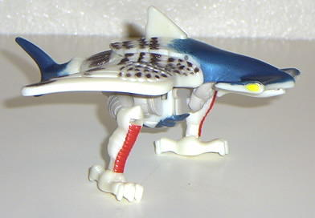
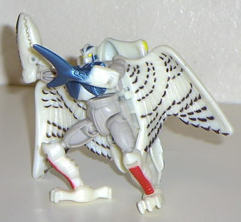

Air
Hammer
Air
Hammer


Allegiance
: Maximal
Size
: Basic
Difficulty of Transformation
: Easy
Color Scheme
: White, off-white,
brown, yellow, and aquamarine, with two stripes of red
Rating
: 5.8
Beast mode is a hawk
with a hammerhead shark head and tailfin. Although it looks good, especially
from the top, the mouth can become disconnected from the head easily and
the tailfin breaks off a lot. Also, his robot body sticks out from under
the beast mode, which kind of ruins the effect of a "robot in disguise"
if you look at him from any other angle than directly above.
Robot mode is okay,
but not great. His wings stick out and cannot fold back, and have no articulation
whatsoever. His beast head sticks out in the back also, and although one
of his hands is a claw, another is his tailfin, which not only looks weird,
but doesnt seem to serve any purpose.
Not a very well-built
transformer, but the beast mode is a cool combination.
Air Hammer Bio
:
FUNCTION: Aerial Reconnaissance
If Air Hammer possesses one attribute,
it is mind-boggling speed - add that to his scanned characteristics and
it equals the perfect reconnaissance warrior. His aerodynamic structure
helps Air Hammer to be equally dexterous in water as in air. He sees with
the eyesight of a hawk and has the ability to sniff out a Predacon from
miles away. Well liked by his fellow Maximals, Air Hammer is a robot of
few words, preferring to save his razor-sharp jaw for locking onto the
limbs of enemy Predacons.
Strength: 5.0
Speed: 10.0
Rank: 6.0
Firepower: 4.0
Intelligence: 8.0
Endurance: 9.0
Courage: 9.0
Skill: 8.0
Review by Beastbot
Back to Fuzors
Index